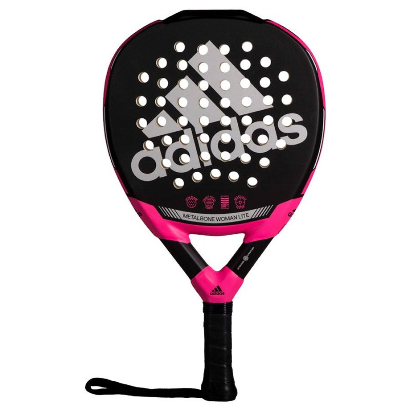
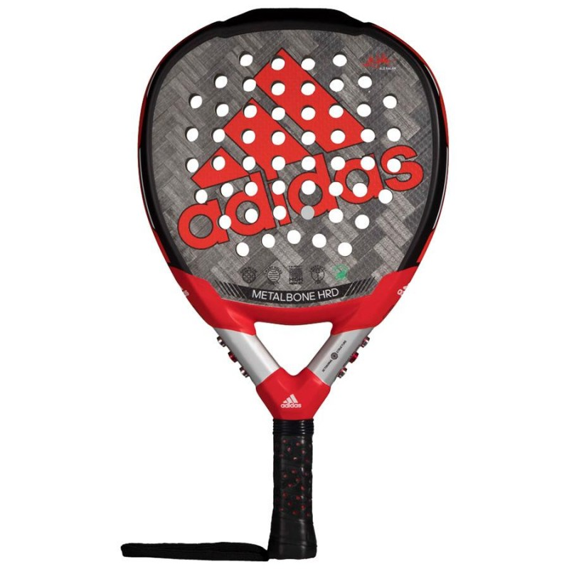

Pala de pádel Royal Padel RP 32 Aniversario Hybrid 2022.
Disfruta de mayor pegada en tu juego con esta pala de control Royal Padel,
un modelo que combina 2 tipos de goma para proporcionar las mejores sensaciones
Pala de pádel Adidas Adipower CTRL 3.1
Máximo control con esta pala de padel Adidas gracias a su molde y balance
pero con muy buena pegada gracias a los materiales y tecnologías utilizadas.
Pala de pádel Nox Tempo WPT 2022
Máxima precisión con esta pala de control Nox,
un producto oficial del WPT que destaca por su amplio punto dulce, manejabilidad y toque en la pista.
Palas de Mujer

Pala de padel Adidas Metalbone Woman 2022.
Fantástica para para mujer Adidas,
una versión de la Metalbone con peso más ligero y materiales flexibles
para que las jugadoras la disfruten al máximo.
Pala de pádel Royal Padel RP 32 Aniversario Woman 2022.
Mayor comodidad y ligereza con esta pala para mujer Royal Padel,
un modelo de alto rendimiento que destaca por su control, manejabilidad y diseño.
Pala de padel Vibora Naya Edition 2021.
Una de las mejores palas para mujer que podrás encontrar,
diseñada en formato lágrima, balance contenido, peso reducido y fantástico diseño de Vibora.
Palas de Potencia

Pala de pádel Adidas Metalbone HRD 2022
Versión más dura de la nueva pala de Ale Galán,
un modelo Adidas contundente y con goma de alta densidad para conseguir mayor potencia en el golpeo.
Pala de pádel Bullpadel Vertex 03 2022.
Regresa una de las mejores palas polivalentes,
un modelo desarrollado con las mejores tecnologías de Bullpadel que esta temporada utilizará Juan Tello.
Pala de pádel Babolat Technical Viper APT.
Nuevo diseño para el APT de una de las palas más contundentes de Babolat,
un modelo con tejido 12k y acabado rugoso que nos permite pegar con más potencia.